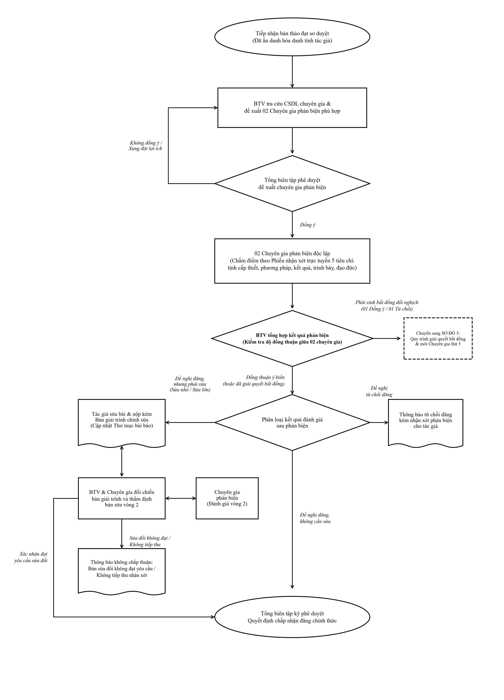
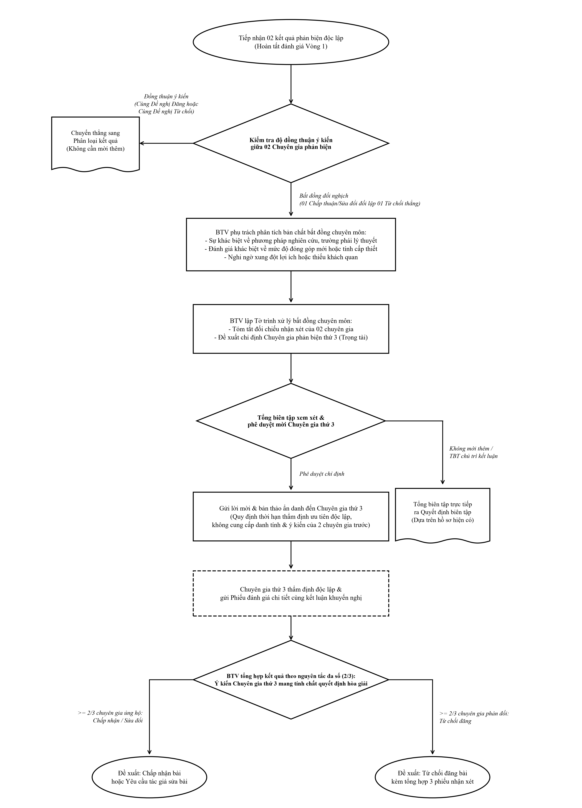

Quy trình đăng bài khoa học

Nộp bản thảo trực tuyến
Tác giả đăng ký tài khoản, khai báo thông tin bài viết theo chuẩn IMRaD, nộp file Word (.docx) đã ẩn danh và các tệp đính kèm dữ liệu thực nghiệm.
Kiểm tra sơ bộ & Quét trùng lặp Turnitin
Thư ký tòa soạn kiểm tra tính phù hợp tôn chỉ mục đích, định dạng thể lệ bài viết và tỷ lệ trùng lặp. Bài viết hợp lệ sẽ được chuyển Tổng biên tập phân công chuyên ban.
Phản biện kín hai chiều (Peer Review)
Bài báo được gửi thẩm định độc lập tới tối thiểu 02 chuyên gia phản biện am hiểu sâu về lĩnh vực nghiên cứu. Tác giả và chuyên gia không biết danh tính của nhau.
Tác giả chỉnh sửa & Giải trình phản biện
Tác giả nhận thông báo kết quả (Chấp nhận, Sửa chữa nhỏ, Sửa chữa lớn hoặc Từ chối). Nộp lại bản thảo chỉnh sửa kèm Bảng giải trình chi tiết theo từng ý kiến phản biện.
Biên tập kỹ thuật & Đọc bông (Proofreading)
Biên tập viên định dạng trang in, chuẩn hóa trích dẫn tài liệu tham khảo, đối chiếu thuật ngữ tiếng Anh và gửi bản in thử (PDF Galley Proof) cho tác giả xác nhận lần cuối.
Cấp mã DOI & Xuất bản chính thức
Bài viết được cấp mã định danh quốc tế CrossRef DOI, đưa lên trang web tạp chí điện tử (Online First) và gom vào số ấn phẩm định kỳ tiếp theo.
Quy trình phản biện chuyên môn
1. Nguyên tắc phản biện độc lập kín 2 chiều
Mỗi bài nộp hợp lệ được thẩm định độc lập bởi 02 nhà khoa học có học vị Tiến sĩ trở lên hoặc học hàm Phó Giáo sư, Giáo sư, không cùng đơn vị công tác trực tiếp với tác giả.
Phiếu đánh giá phản biện bao gồm 5 tiêu chí: (1) Tính cấp thiết và tính mới, (2) Cơ sở lý thuyết và phương pháp, (3) Giá trị thực nghiệm & kết quả, (4) Trích dẫn tài liệu tham khảo, (5) Văn phong khoa học.
2. Kết luận đánh giá của Chuyên gia phản biện
Chuyên gia đưa ra 1 trong 4 mức đánh giá chính thức:
- Chấp nhận đăng không cần sửa đổi (Accept): Bài viết đạt chất lượng xuất sắc.
- Chấp nhận sau khi sửa chữa nhỏ (Minor Revisions): Bổ sung trích dẫn, làm rõ câu chữ, giải thích thêm số liệu bảng biểu.
- Xem xét lại sau khi sửa chữa lớn (Major Revisions): Cần bổ sung thí nghiệm, thay đổi phương pháp hoặc tính toán lại mô hình. Phải phản biện vòng 2.
- Từ chối đăng (Reject): Không có tính mới, phương pháp sai lệch hoặc vi phạm liêm chính nghiên cứu.

3. Cơ chế mời Chuyên gia phản biện thứ 3 (Third Reviewer)
Trường hợp 2 phản biện có ý kiến trái ngược nhau (ví dụ 1 chuyên gia Chấp nhận đăng và 1 chuyên gia Đề nghị từ chối), Tổng biên tập sẽ chỉ định Chuyên gia phản biện thứ 3 để đánh giá độc lập hoặc đưa ra Ban Thường trực Hội đồng biên tập bỏ phiếu quyết định cuối cùng.

Thể lệ viết và gửi bài báo khoa học
1. Quy cách trình bày bản thảo
- Định dạng tệp: Microsoft Word (.docx), font chữ Times New Roman, cỡ chữ 11pt, giãn dòng Single (1.0).
- Dung lượng bài báo: Dao động từ 08 đến 15 trang chuẩn A4 (bao gồm toàn bộ bảng biểu, hình vẽ và tài liệu tham khảo).
- Lề trang: Top 2.5cm, Bottom 2.5cm, Left 3.0cm, Right 2.0cm. Tiêu đề các mục đánh số La Mã hoặc số Ả Rập phân cấp rõ ràng (1, 1.1, 1.1.1).
2. Cấu trúc bài báo khoa học chuẩn quốc tế (IMRaD)
Bản thảo hoàn chỉnh bắt buộc bao gồm các phần theo thứ tự:
- Tiêu đề bài báo (Title): Ngắn gọn, súc tích, phản ánh đúng nội dung chính (Tiếng Việt & Tiếng Anh).
- Tóm tắt (Abstract): Từ 150 – 250 từ, nêu rõ bối cảnh, phương pháp, kết quả chính và đóng góp khoa học.
- Từ khóa (Keywords): Từ 4 đến 6 từ/cụm từ phản ánh lĩnh vực nghiên cứu.
- 1. Đặt vấn đề (Introduction): Bối cảnh nghiên cứu, tổng quan các công trình liên quan và mục tiêu bài báo.
- 2. Phương pháp nghiên cứu (Methods): Mô tả chi tiết dữ liệu, mô hình, thiết bị hoặc thuật toán thực hiện.
- 3. Kết quả & Thảo luận (Results and Discussion): Trình bày dữ liệu khách quan, so sánh với các công bố trước đó.
- 4. Kết luận (Conclusion): Tóm lược kết quả đạt được, đóng góp mới và hướng phát triển tiếp theo.
- Tài liệu tham khảo (References): Trích dẫn theo chuẩn IEEE (cho ngành Kỹ thuật - Công nghệ) hoặc APA 7th (cho ngành Kinh tế - Xã hội).
Danh mục biểu mẫu dành cho Tác giả & Phản biện
| Tên biểu mẫu / Tài liệu | Định dạng & Dung lượng | Tải về tệp tin |
|---|---|---|
|
BM-01: Mẫu bài báo chuẩn (Paper Template)
Định dạng sẵn phông chữ, khoảng cách, kiểu bảng biểu IMRaD |
Word (.docx) Định dạng chuẩn Tạp chí |
Tải file .DOCX |
|
BM-02: Bản cam đoan quyền tác giả (Copyright Agreement)
Kê khai danh sách tác giả, cam kết liêm chính học thuật và chuyển giao xuất bản |
Word (.docx) Định dạng chuẩn Tạp chí |
Tải file .DOCX |
|
BM-03: Phiếu giải trình chỉnh sửa của Tác giả (Revision Response)
Bảng đối chiếu từng góp ý của chuyên gia phản biện và nội dung chỉnh sửa |
Word (.docx) Định dạng chuẩn Tạp chí |
Tải file .DOCX |
|
BM-04: Phiếu nhận xét phản biện (Reviewer Evaluation Form)
Mẫu tiêu chí đánh giá cho các chuyên gia phản biện độc lập |
Word (.docx) Định dạng chuẩn Tạp chí |
Tải file .DOCX |